건설기계정비산업기사 (2006-08-06 기출문제)
1과목: 건설기계정비
1. 피스톤과 실린더와의 틈새가 클 때 일어나는 현상 중 틀린 것은?
- 피스톤 슬랩 현상이 생긴다.
- 압축 압력이 저하한다.
- 오일이 연소실로 올라온다.
- 피스톤과 실린더의 소결이 일어난다.
(정답률: 90%)

2. 지게차 리프트용 체인을 점검하고자 할 때 하지 않아도 되는 것은?
- 크랙
- 파괴
- 마모
- 부싱
(정답률: 72%)
3. 유압식 자동변속기를 장착한 불도저에서 기어 변속이 전혀 안되는 원인은 무엇인가? (단, 완전 분해 수리를 완료 한 후 장비에 부착했다.)
- 자동변속기의 오일 라인에 공기가 차있다.
- 디퍼런셜 기어가 파손되었다.
- 엔진의 출력이 부족하다.
- 오일 필터를 교환하지 않았다.
(정답률: 63%)
4. 블레이드를 수평으로 30° 회전시킬 수 있고 경사지 측면작업, 절토작업 굳은 땅 옆으로 자르기 등의 작업에 가장 효과적인 도저는?
- 타이어 도저
- 불도저
- 앵글 도저
- 틸트 도저
(정답률: 67%)
5. 휠 구동식 건설기계의 스티어링 펌프에서 가해진 유압이 작동 실린더 내로 들어갔을 때 그 압력은 어떻게 되나?
- 피스톤 헤드에만 같은 압력을 받는다.
- 피스톤 링에만 같은 압력을 받는다.
- 실린더에만 같은 압력을 받는다.
- 유체가 가해진 모든 점(실린더 내)에 같은 압력을 받는다.
(정답률: 90%)
6. AC발전기의 출력 조정은 무엇을 변화시켜 조정하는가?
- 속도
- 축전지 전압
- 로터 전류
- 스테이터 전류
(정답률: 73%)
7. 건설기계의 디젤 엔진에서 연료의 세탄가는?
- 세탄과 이소헵탄의 비
- 메틸 나프탈린과 이소옥탄의 비
- 메틸 나프탈린과 세탄의 비
- 이소옥탄과 정헵탄의 비
(정답률: 67%)
8. 엔진의 팬벨트 장력이 규정보다 작을 경우 생기는 현상은?
- 발전기의 베어링 파손
- 라디에이터 누유
- 엔진과열
- 엔진오일 압력 저하
(정답률: 56%)
9. 덤프트럭의 축거가 3.0m 이다. 외측 바퀴의 최대 회전각이 30°, 내측 바퀴의 최대 회전각은 45° 이다. 이 때의 최소 회전반경은 몇 m인가? (단, 바퀴면 중심과 킹핀과의 거리는 20cm이다.)
- 4.24
- 4.44
- 6.0
- 6.2
(정답률: 36%)
10. 아스팔트 피니셔의 호퍼에 있는 아스콘을 노면으로 이송하여 도로 포장을 하려한다. 아스콘이 이송 안되는 원인이 아닌 것은?
- 트랙 절단
- 피드 절단
- 체인 절단
- 이송 스크루 파손
(정답률: 43%)
11. 타이어식 로더가 골재장에서 적하작업시 작업 성능에 미치는 영향이 가장 적은 것은?
- 원동기 성능
- 건설기계의 중량
- 토사의 재질과 량
- 타이어의 마모상태
(정답률: 62%)
12. 덤프트럭의 제동 초속도가 50km/h, 차량중량 1,500kgf, 각 바퀴의 제동력 210kgf, 220kgf, 230kgf, 240kgf 회전부분 상당 중량이 5%일 때 정지거리는 얼마인가? (단, 공주 시간은 0.1초 이다.)
- 17.6m
- 18.6m
- 19.6m
- 20.6m
(정답률: 50%)
13. 다음 중 분사 펌프 시험기로 시험할 수 없는 것은?
- 연료 공급펌프 시험
- 조속기 작동 시험
- 분사시기 측정
- 분사량 측정
(정답률: 27%)
14. 주행 중 트랙이 벗겨지는 원인에 해당하지 않는 것은?
- 트랙 긴장도가 이완되었을 때
- 상부 롤러의 과다 마모 또는 파손시
- 스프로킷과 전부 유동륜의 중심이 틀릴 때
- 트랙 리코일 스프링의 장력이 클 때
(정답률: 80%)
15. 전조등의 불이 들어오지 않아 점검해 본 항목 중 틀린 것은?
- 퓨즈
- 전구의 필라멘트 단선여부
- 연결단자의 접촉 불량 여부
- 전압조정기 단자 확인
(정답률: 87%)
16. 전자제어 디젤기관의 분사시기 제어 시스템에서 기본 분사시기를 결정하는 주 입력 신호는?
- 흡기 압력
- 냉각수 온도
- 기관 부하
- 기관 회전속도
(정답률: 74%)
17. 17℃의 공기 1kgf/cm2로부터 8kgf/cm2까지 단열 압축할 경우 압축 후의 온도는? (단, k=1.4이다.)
- 136℃
- 252℃
- 368℃
- 493℃
(정답률: 40%)
18. 유압장치에서 압력제어 밸브가 하는 일로 가장 중요한 것은?
- 유량조정
- 일의 속도결정
- 일의 방향결정
- 일의 크기결정
(정답률: 79%)
19. 터보차저를 구동시키기 위하여 많이 사용되는 것은?
- 크랭크 샤프트 벨트
- 송풍기의 공기
- 배기가스
- 캠 샤프트
(정답률: 70%)
20. 전기자 전류가 20A 일 때 10kgf-m의 토크를 내는 직권전동기가 있다. 이 전동기의 전기자 전류가 40A 일 때의 토크는?
- 20kgf-m
- 30kgf-m
- 40kgf-m
- 50kgf-m
(정답률: 50%)
2과목: 내연기관
21. 어떤 4행정 사이클 기관의 밸브 개폐시기가 다름과 같을 때, 흡기밸브가 열려있는 각도는? (단, 흡기밸브 - 열림 : TDC 전 15°, 닫힘 : BDC 후 45°, 배기밸브 - 열림 : BDC 전 45°, 닫힘 : TDC 후 10°)
- 210°
- 220°
- 230°
- 240°
(정답률: 63%)
22. 어떤 기관의 회전력이 4000kgf∙cm이고, 회전수가 1800rpm이다. 이 때 축에 발생하는 출력은 약 몇 ps 인가?
- 73.9
- 85.5
- 118.5
- 100.5
(정답률: 35%)
23. 실린더 내의 연소가스 온도가 1600℃, 냉각수 온도 80℃, 전열면적 1,458m2인 실린더 기관의 방열량은 약 얼마인가? (단, 열 통과율은 k=215kcal/m2h℃ 이다.)
- 501552kcal/kg
- 476474kcal/kg
- 238237kcal/kg
- 25077kcal/kg
(정답률: 55%)
24. 어떤 용기 내의 유체가 기계적으로 교란되면서 2,135kgf∙m의 일을 받고 또 40kcal의 열을 흡수했다면, 내부 에너지의 변화는?
- 40kcal
- 45kcal
- 50kcal
- 35kcal
(정답률: 50%)
25. 프라이밍 펌프(priming pump)의 작용으로 가장 거리가 먼 것은?
- 연료 공급펌프의 소음 작용을 방지한다.
- 손으로 작동시키며, 연료 공급펌프이다.
- 연료장치의 공기빼기 작용 때 사용한다.
- 기관의 정지상태에서 연료를 분사펌프까지 보낸다.
(정답률: 74%)
26. 카르노 사이클 엔진이 0℃와 100℃ 사이에서 작동하는 것과 100℃와 200℃ 사이에서 작동하는 것 중 어는 것이 효율이 더 좋은가?
- 0℃와 100℃ 사이에서 작동하는 것
- 10℃와 200℃ 사이에서 작동하는 것
- 비교할 수 없다.
- 양쪽이 똑같다.
(정답률: 60%)
27. 기관의 제동마력을 Le(PS), 연료 소비량을 B(kgf/h), 연료의 저발열량을 Hu(kcal/kgf)라 하면 제동 열효율을 ηe를 구하는 식은?
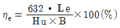
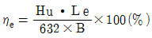
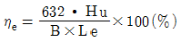
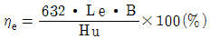
(정답률: 66%)
28. 공기 과잉률을 가장 바르게 표시한 것은?
- 연소에 필요한 이론적 공기량과 실제로 드는 연료량과의 비
- 연소에 필요한 이론적 공기량과 실제로 드는 공기량과의 비
- 연소에 필요한 이론적 공기량과 실린더 수와의 비
- 연소에 필요한 이론적 공기량과 연료 비중과의 비
(정답률: 61%)
29. 가솔린 연료가 갖추어야 할 성질이 아닌 것은?
- 기화성이 클 것
- 앤티노크성이 클 것
- 발열량이 클 것
- 착화지연이 짧고 연소속도가 길 것
(정답률: 28%)
30. 전자제어 디젤 연료분사장치에서 컴퓨터(ECU)에 입력되는 요소가 아닌 것은?
- 분사압력
- 기관 회전속도
- 제어랙 위치
- 냉각수 온도
(정답률: 31%)
31. 기관 본체의 기계소음에 해당되지 않는 것은?
- 피스톤 슬랩음
- 베어링 타음
- 태핏의 타음
- 냉각팬 소음
(정답률: 72%)
32. 압축행정 중 점화시기에 도달하기 전에 점화플러그 또는 배기밸브 등의 과열에 의하여 점화되는 현상을 무엇이라고 하는가?
- 포스트 이그니션(post ignition)
- 데토네이션(detonation)
- 프리 이그니션(pre-ignition)
- 정상연소(normal ignition)
(정답률: 77%)
33. 다음 중 윤활유의 기능에서 옳지 않은 것은?
- 기밀작용
- 냉각작용
- 청결작용
- 응력집중작용
(정답률: 81%)
34. 다음 그림은 기관의 성능곡선을 표시한 것이다. 그래프에 대한 설명이 잘못된 것은?
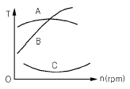
- A : 연료소비율
- B : 축 출력
- C : 연료소비율
- A : 축 토크
(정답률: 75%)
35. 기관의 평형에 영향을 미치는 부품으로만 짝지어진 것은?
- 크랭크 축, 플라이 휠, 피스톤, 크랭크 축풀리
- 크랭크 축, 플라이 휠, 피스톤, 실린더헤드
- 크랭크 축, 플라이 휠, 실린더 블록, 크랭크 축 풀리
- 크랭크 축, 실린더 헤드, 피스톤, 크랭크축 풀리
(정답률: 59%)
36. 터보 과급기의 압축기에서 용적형이 아닌 것은?
- 루츠
- 축류 압축기
- 슬라이딩 베인
- 스크루
(정답률: 35%)
37. 피스톤 링의 3대 작용이 아닌 것은?
- 기밀작용
- 오일제거작용
- 열전도작용
- 윤활작용
(정답률: 60%)
38. 다음 중 예연소실식 연소실의 특징에 해당되지않는 것은?
- 주연소실에서 혼합기를 완전 연소시킨다.
- 예열 플러그가 필요하다.
- 착화 지연이 길어서 노킹이 심하다.
- 직접분사실식 보다 연료 소비율이 크고 열효율이 낮다.
(정답률: 55%)
39. 다음 중 4행정 기관에 대한 설명으로 맞는 것은?
- 크랭크축이 1회전으로 1사이클을 이루는 것
- 크랭크축이 2회전으로 1사이클을 이루는 것
- 크랭크축이 3회전으로 1사이클을 이루는 것
- 크랭크축이 4회전으로 1사이클을 이루는 것
(정답률: 90%)
40. 가스 터빈의 가장 중요한 구성 요소로서 짝지워진 것은?
- 터빈, 압축기, 냉각기
- 압축기, 냉각기, 가열기
- 압축기, 발전기, 냉각기
- 압축기, 연소기, 터빈
(정답률: 44%)
3과목: 유압기기 및 건설기계안전관리
41. 유압장치에서 동작유의 오염은 기기를 손상시킨다. 이 때문에 펌프의 흡입관로에 설치하여 흡입되는 불순물을 제거할 목적으로 사용되는 것은?
- 스트레이너
- 릴리프 밸브
- 가스킷
- 패킹
(정답률: 82%)
42. 유압 액추에이터(actuator) 기능 설명으로 가장 적절한 것은?
- 작동유의 압력에너지를 기계적 에너지로 바꾼다.
- 작동유를 일정한 장소에 저장한다.
- 작동유의 유량을 조절하는 밸브의 일종이다.
- 작동유의 압력을 축적하는 용기이다.
(정답률: 82%)
43. 단면 형상에 따라 V형, U형, L형, J형, SEA형 등으로 분류되고 누설방지 기능을 발휘하며, 주로 왕복운동에 사용하는 것은?
- O링
- 기스킷
- 컵 패킹
- 오일 실
(정답률: 50%)
44. 일반적인 유압장치의 장점이 아닌 것은?
- 속도를 무단으로 변속할 수 있다.
- 작은 장치로 큰 힘을 얻을 수 있다.
- 마찰손실이 크고 효율이 나쁘다.
- 전기의 조합으로 자동제어가 가능하다.
(정답률: 100%)
45. 전기나 그 밖의 입력신호에 따라서 비교적 높은 압력의 공급원으로부터 기름의 유량과 압력을 상당한 응답속도로 제어하는 서보 유압 밸브의 특징이 아닌 것은?
- 제어되는 것은 기계적 변위이다.
- 단위 중량당의 출력이 크므로 소형으로써 대 출력을 얻을 수 있다.
- 피드백(feed back) 제어이다.
- 압력제어를 할 수 없다.
(정답률: 89%)
46. 다음 중 속도제어 회로의 종류가 아닌 것은?
- 미터 인 회로
- 미터 아웃 회로
- 블리드오프 회로
- 로킹 회로
(정답률: 91%)
47. 방향 전환 밸브에 있어서 밸브와 주 관로와의 접속구 수를 무엇이라 하는가?
- 스풀 수
- 위치 수
- 포토 수
- 방 수
(정답률: 61%)
48. 다음 중에서 일반적인 유압 작동유의 구비 조건이 아닌 것은?
- 비압축성일 것
- 녹, 부식의 발생을 방지할 수 있을 것
- 열을 방출시킬 수 없을 것
- 장시간 사용하여도 화학적으로 안정할 것
(정답률: 92%)
49. 보기와 같은 밸브 기호의 명칭은?
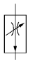
- 직렬형 유랑 조정 밸브
- 바이패스형 유량 조정 밸브
- 체크 볼이 유량 조정 밸브
- 온도보상 유량 조정 밸브
(정답률: 58%)
50. 유압 회로에 사용되는 어큐뮬레이터의 사용상의 주의점 설명으로 틀린 것은?
- 어큐뮬레이터의 규정보다 높은 압력으로 충전하여서는 안된다.
- 어큐뮬레이터를 분해할 때 구멍에 먼지 등이 들어가지 않도록 한다.
- 어큐뮬레이터에는 건조한 질소와 같은 가스를 충전해서는 안된다.
- 어큐뮬레이터를 분해할 때는 먼저 가스와 유압을 제거 한다.
(정답률: 75%)
51. 유압 실린더의 정비에 대한 안전 및 유의사항 중 잘못된 것은?
- 실린더를 탈거하기 전에 회로 내의 잔압을 완전히 제거한다.
- 실린더를 분해하기 전에 작동유를 배출시킨다.
- 실린더와 피스톤에 손상이 가지 않도록 주의한다.
- 부품을 세척할 때는 휘발성이 좋은 가솔린을 사용한다.
(정답률: 96%)
52. 굴삭기 작업시 안전한 작업방법으로 틀린 것은?
- 작업시 주변의 안전상태를 확인 후 장비를 가동한다.
- 작업복을 착용해야 한다.
- 작업시는 실린더의 스트로크 끝에서 약간 여유를 남기고 운전한다.
- 배수구 굴삭 방법에는 주행방향에 맞추어전진하면서 굴삭한다.
(정답률: 83%)
53. 세이퍼 작업시 주의사항에 대하여 설명하였다. 맞는 것은?
- 바이트가 이동하는 램은 공작율보다 20~30mm 정도 크게 한다.
- 바이트는 가급적 공작물을 보다 길게 물린다.
- 램의 행정을 조정하는 핸들은 작업전이나 작업 중에 조립된 상태로 둘 것
- 칩이 비산하는 방향에 유효공간을 둘 것
(정답률: 32%)
54. 작업장 통로 및 바닥 재해 방지 대책 중 틀린 것은?
- 발이 빠지거나 중량물의 낙하 등 위험시는 신발 바닥이 두꺼운 운동화를 착용한다.
- 사용하지 않는 운반차 등은 통로에 방치하지 말고 지정된 장소에 두도록 한다.
- 기계와 기계, 기계와 설비 사이의 통로 폭을 80cm 이상 확보 한다.
- 재료 찌꺼기나 폐품은 그 종류별로 회수 상자를 두어 수집 정리한다.
(정답률: 84%)
55. 스패너 렌치 사용시 주의사항이다. 틀린 것은?
- 스패너를 두개로 잇거나 자루에 파이프를 끼워서 사용해서는 안된다.
- 스패너를 너트에 단단히 밀면서 사용한다.
- 조정 렌치는 아래턱 방향으로 돌려서 사용한다.
- 스패너의 입이 너트 폭과 잘 맞는 것을 사용하고 입이 변형된 것은 사용하지 않는다.
(정답률: 67%)
56. 건설기계 차체 수리시 전기 용접기를 사용함에있어서 지켜야 할 수칙이다. 거리가 먼 것은?
- 용접기 내부에 절대로 손을 대지 않는다.
- 우천시 옥외 작업은 하지 않는다.
- 작업시 보호 장구의 착용을 일부만 할 수있다.
- 피 용접물은 코드를 완전히 접지 시킨다.
(정답률: 98%)
57. 드릴링 머신으로 작업할 때 주의할 점이다. 틀린 것은?
- 얇은 판재는 각목을 밑에 깔고 적당한 기구로 고정한 후 작업한다.
- 처음과 거의 끝날 시점의 작업은 특히 주의를 집중하여야 한다.
- 보안경을 착용하여야 한다.
- 반드시 장갑을 끼고 작업한다.
(정답률: 88%)
58. 사고 방지를 위한 시정책 중 근로자에게 해당하는 사항은?
- 기계 장비 및 시설의 개선
- 안전제도 및 규칙준수
- 개인 기술의 미비점 개선
- 교육과 훈련의 미비점 보완
(정답률: 69%)
59. 건설기계에서 기관정비 전의 안전 조치사항과 관계가 먼 것은?
- 축전지를 떼어내고 작업할 것
- 기관 탈착시 전용 공ㆍ기구를 사용할 것
- 에어컨 배관 부분에 누수점검은 전용 테스터기를 사용할 것
- 기관을 회전시킬 때 냉각팬을 잡고 회전시킬 것
(정답률: 82%)
60. 다음 중 재해방지 이론이 아닌 것은?
- 도미노 이론
- 방지 이론
- 재해 피라미드
- 빙산의 법칙
(정답률: 59%)
4과목: 일반기계공학
61. 일반적으로 열간가공과 냉간가공을 구분하는 온도는?
- 연성 온도
- 취성 온도
- 재결정 온도
- A1변태 온도
(정답률: 74%)
62. 열경화성 수지(성형하여 굳어지면 다시 가열하여도 연화되거나 용융되지 않고 연소하는 성질을 가진 수지)가 아닌 것은?
- 페놀수지
- 아크릴 수지
- 규소 수지
- 멜라민 수지
(정답률: 37%)
63. 프레스 가공을 분류할 때 전단가공의 종류에 속하지 않는 것은?
- 엠보싱
- 블랭킹
- 트리밍
- 셰이빙
(정답률: 66%)
64. 모듈이 8인 외접한 한쌍의 표준 스퍼기어의 잇수가 각각 21, 73일때중심거리는몇mm인가?
- 188
- 376
- 752
- 1504
(정답률: 42%)
65. 다음은 나사에 대한 설명이다. 틀린 것은?
- 나사를 1회전 시켰을 때, 축 방향으로 진행한 거리를 리드라고 한다.
- 오른나사는 시계방향으로 회전할 때 전진 하는 나사이다.
- 유효지름은 수나사의 최대지름이며, 나사의 크기를 나타낸다.
- 사각나사는 힘이 작용하는 방향이 축선과 평행하며, 나사효율이 좋다.
(정답률: 57%)
66. 그림과 같은 스프링 장치에 인장하중 P=100kgf 일 때, 이 스프링 장치의 하중방향의 처짐은 얼마인가? (단, 각 스프링의 스프링 상수는 k1=20kgf/cm 이고, k2=10kgf/cm이다.)
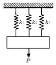
- 1.67cm
- 2cm
- 2.5cm
- 20cm
(정답률: 57%)
67. 드릴링 머신에서 할 수 없는 작업은?
- 카운터 보링
- 리밍
- 카운터 싱킹
- 코킹
(정답률: 48%)
68. 그림과 같이 길이 ℓ인 단순보의 중앙에 집중하중 W를 받을 때 최대 굽힘모먼트(Mmax점)는 얼마인가?
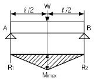
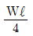
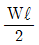
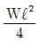
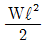
(정답률: 56%)
69. 총 양정이 3m, 공급유량 2.5m3/min인 펌프의 동력은 약 몇 kW가 필요한가? (단, 유체의 비중은 0.82이고, 펌프효율은 0.9이다.)
- 0.56
- 1.12
- 2.24
- 4.48
(정답률: 48%)
70. 출력이 한 방향으로만 작용할 때 사용되는 것으로 주로 바이스, 압착기 등에 사용되는 나사로 가장 적합한 것은?
- 톱니나사
- 너클나사
- 볼나사
- 삼각나사
(정답률: 54%)
71. 다음 중에서 가스절단이 가장 쉬운 금속은?
- 구리
- 알루미늄
- 주철
- 연강
(정답률: 43%)
72. 황동에는 7 : 3 황동과 6 : 4 황동이 있다. 황동의 주성분으로 가장 적당한 것은?
- 구리(Cu)＋망간(Mn)
- 구리(Cu)＋아연(Zn)
- 구리(Cu)＋니켈(Ni)
- 구리(Cu)＋규소(Si)
(정답률: 81%)
73. 윤활유의 주요 작용이 아닌 것은?
- 냉각 작용
- 산화방지 작용
- 부식 작용
- 밀폐 작용
(정답률: 71%)
74. 베어링의 번호가 6008일 때 베어링의 안지름은 몇 mm인가?
- 8
- 20
- 30
- 40
(정답률: 69%)
75. 기어의 각부 명칭 중 피치원의 둘레를 잇수로 나눈 값을 무엇이라 하는가?
- 원주피치
- 모듈
- 지름피치
- 물림 길이
(정답률: 50%)
76. 강을 열처리하는 방법 중에서 풀림의 일반적인 옥적이 아닌 것은?
- 가공에서 생긴 내부 응력을 저하시킨다.
- 조직을 균일화, 미세화 시킨다.
- 담금질한 강을 경화시킨다.
- 열처리로 인하여 경화된 재료를 연화시킨다.
(정답률: 53%)
77. 외측 마이크로미터에서 측정력을 일정하게 하는 것은?
- 딤블
- 앤빌
- 래칫 스톱
- 클램프
(정답률: 54%)
78. 길이 300mm의 봉이 인장력을 받아 1.5mm 산장 되었을 때 길이 방향 병형률은?
- 1.33×10-3
- 5.0×10-2
- 5.0×10-3
- 1.33×10-2
(정답률: 53%)
79. 천연고무와 비슷한 성질을 가진 합성고무로 천연고무보다 내구성, 내산성, 내열성이 더 우수하여 가스켓 재료로 많이 사용되는 것은?
- 모넬메탈
- 글라스 울
- 네오프렌
- 세라크 울
(정답률: 70%)
80. 300rpm으로 3.75kW를 전달시키고 있는 축의 비틀림 모멘트는 약 몇 kgf∙mm인가?
- 5240
- 6087
- 8953
- 12175
(정답률: 25%)
피스톤과 실린더의 틈새가 클 때, 압축 압력이 저하되어 피스톤 슬랩 현상이 생길 수 있다. 또한, 피스톤과 실린더가 밀착되지 않아 오일이 연소실로 올라가는 것은 맞지만, 이는 피스톤과 실린더의 소결과는 직접적인 관련이 없다.
피스톤과 실린더의 소결은 피스톤과 실린더가 밀착되어 있지 않아 연료와 공기가 누설되어 연소가 원활하지 않을 때 발생한다. 이는 엔진의 성능 저하와 고장으로 이어질 수 있다.